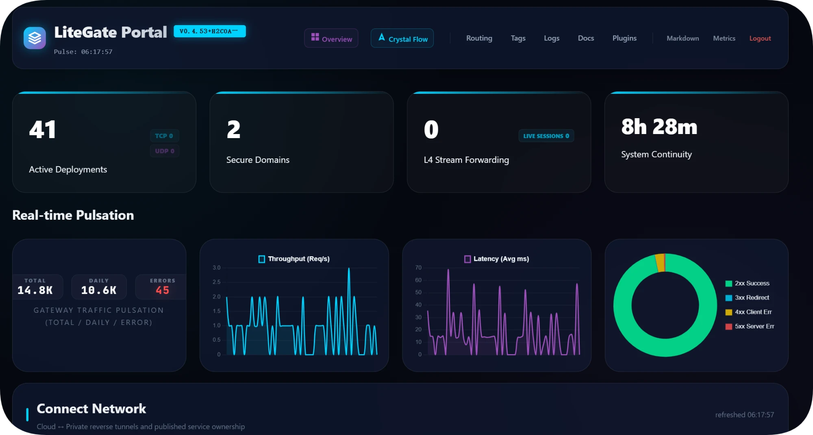
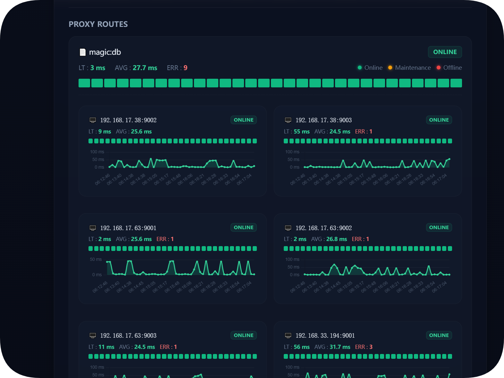
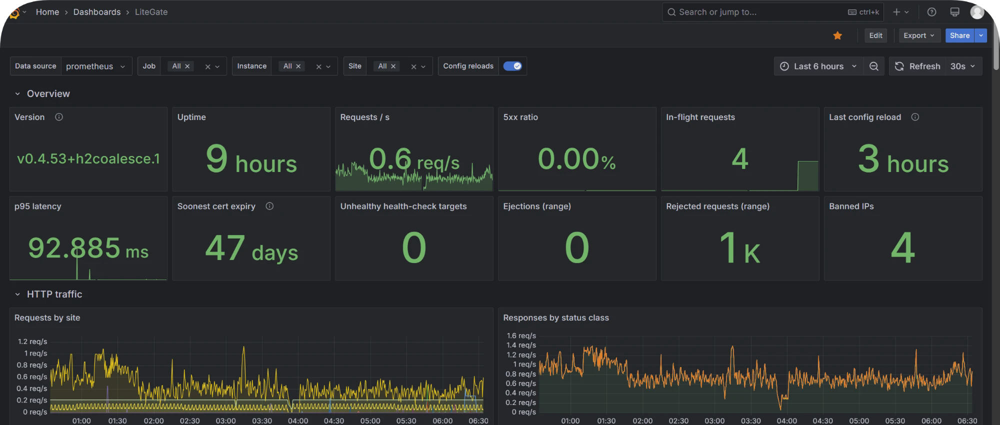

一个程序，
管好你所有服务的入口
LiteGate 放在你的网站、API 和内网服务前面：接收外部流量，自动配好 HTTPS，再按规则转给后端。以前要 Nginx、Certbot、frp 和一套推送服务拼起来的事，现在一个二进制加几行 YAML 就够了。
site: https://app.example.com # 自动申请证书 /api: 127.0.0.1:8080 # 接口交给后端 spa: ./dist # 其余交给前端
$ ./litegate $ curl -I https://app.example.com/ HTTP/2 200
一个 LiteGate，顶替常见的几件套
用得到哪块开哪块：只想托管一个网站，也只需要三行配置。
能做什么
你想做的事，从这里找
每张卡片是一个常见需求和它的最短写法。点进去是这个场景的完整做法：先跑通，再按需加功能，最后给出手册里对应的章节。
发布网站或前端应用
静态站、Vue / React 单页应用，自动 HTTPS。
site: https://example.com spa: ./dist
给多个后端做 API 网关
按路径分流、负载均衡、健康检查、跨域和限流。
site: api.example.com /users: localhost:8080 /orders: localhost:8081
服务一上线，路由自动出现
Docker、Kubernetes、Consul 里的服务带上标签即可，网关不用改。
labels: litegate.http.host: example.com litegate.http.path_prefix: /api
没有公网 IP，也能发布内网服务
内网节点主动连云端，不开入站端口，证书私钥不出内网。
connect: client: name: home publish_sites: true
在本机安全连上云上数据库
把 VPC 里的 MySQL、Redis 映射到本机端口，走 443 加密并鉴权。
$ litegate forward \
--remote https://db.example.com \
--token-file ./rds.token证书不用再手动管
自动申请续期；家里 80 端口不通就走 DNS-01，泛域名也行。
auto_cert: dns_providers: - name: cf type: cloudflare
给后台加登录和防护
OIDC 单点登录、JWT、IP 白名单、限流、WAF，写在路由下就生效。
/admin: ip_restriction: allow_ips: [10.0.0.0/8]
给浏览器推送实时消息
后端 HTTP POST 一条消息，浏览器通过 SSE 收到，不用另搭推送服务。
/notify: publish: notify.{header.key} /events: subscribe: notify.config
一键开启状态页和控制台
一段配置得到实时状态页；打开 Dashboard 看流量、路由、日志和插件。
/status: status: {show_instances: true}
还有：用 AI 配置和排障 · TCP / UDP 与共用 443 · 多租户 SaaS · 全部功能列表 →
内置 MCP · AI 原生
不想写 YAML？用一句话告诉 AI
LiteGate 内置 MCP 服务，Claude Code、Cursor 等 AI 助手连上后，就能读取现有配置、生成站点、校验、预览差异、保存并实际请求验证，出了问题还能查路由、看错误日志。
- 连上 AI 助手本机执行一条命令，或在运行中的网关开启带 Token 的 SSE 端点。
- 用自然语言描述需求“把 /api 转给 8080，其余用 ./dist，开启 HTTPS。”
- 先校验再生效AI 先校验、给你看差异，再保存和验证；开启发布控制后，改动先进草稿，确认才上线。
$ claude mcp add litegate -- \
litegate mcp -config /etc/litegate/config.yaml
你 把 app.example.com 的 /api 转给 127.0.0.1:8080， 其余用 ./dist 做单页应用，开启 HTTPS AI test_upstream 127.0.0.1:8080 可达 validate_site_config 通过 preview_config_change 新增 sites/app.yaml save_site_config 已保存，网关热加载 verify_site HTTP/2 200
开箱即用
控制台、状态页和 Grafana 面板，各一段配置就有
内置的控制台和状态页不用另装任何组件，数据直接来自网关处理的真实流量：每个站点、每条路由、每个后端实例的延迟和错误一目了然。已经在用 Prometheus + Grafana？导入官方面板即可。

dashboard: enabled: true # 默认端口 9999 username: ops password: "$2a$10$..." # litegate -hash 生成

show_instances 还能看到每个后端实例的健康状况。/status: status: {show_instances: true}

metrics: enabled: true address: 0.0.0.0 # 默认 127.0.0.1:9090 # Grafana → Import → litegate-dashboard.json
为什么选 LiteGate
简单的事写得短，复杂的事也不用换工具
一个文件就能跑
单一 Go 二进制，没有数据库和运行时依赖。下载、写一个站点文件、启动，三步完成。
配置短，而且能一直长大
路径就是键、动作就是值。需要负载均衡、跨域、限流时直接写在同一条路由下，简写和完整写法可以混用。
改了就生效
站点文件保存即热加载，不用重启进程；上线前用 litegate -t 校验配置，和 nginx -t 一样顺手。
HTTPS 默认就绪
写 site: https://域名 就会自动申请和续期证书，HTTP-01、TLS-ALPN-01、DNS-01 泛域名都支持。
看得见、查得到
内置 Dashboard、访问日志、Prometheus 指标和链路追踪；路由为什么没命中，可以直接让 AI 通过 MCP 模拟一次请求查给你看。
不够用时能扩展
litegate build --with 把插件编进二进制：中间件、负载均衡、DNS 服务商、服务发现、多租户选路都能扩展。
架构一览
一个入口，连接互联网和你的全部服务
左边是来自互联网的 HTTP、TCP、UDP 流量，右边是你的后端：通过标签自动发现的服务、站点文件里写明的服务器，以及通过 Connect 反向隧道接入的内网服务。安全、流量治理、证书和观测都在中间这一处完成。
快速开始
一分钟拿到第一个响应
不需要 config.yaml，也不需要域名，在本机就能试。
安装
从 Releases 下载对应平台的二进制，或用 Go 安装：
$ go install \
github.com/jamesleeon/LiteGate/cmd/litegate@latest写一个站点
在工作目录创建 sites/hello.yaml：
site: localhost respond: "Hello, LiteGate!"
启动
之后改 sites/ 里的文件，保存即生效：
$ ./litegate $ curl http://localhost/ Hello, LiteGate!
怎么学
循序渐进：先跑通，再按需深入
不需要把文档从头读到尾。跑通第一个站点后，只看和你场景有关的部分；遇到具体参数再去查手册。